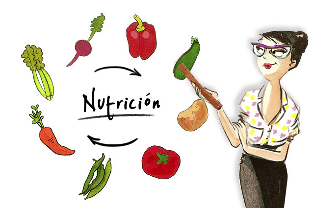

"Comer bien es una forma de respetarse a uno mismo"
La alimentación saludable es aquella que aporta a cada individuo todos los alimentos necesarios para cubrir sus necesidades nutricionales, en las diferentes etapas de la vida (infancia, adolescencia, edad adulta y envejecimiento), y en situación de salud.
| Clasificacion | Alimentos |
|---|---|
| Energéticos | CHO: pasta, arroz, legumbres, patatas, cereales, pan, azúcar, Grasos: aceites, mantequilla, margarina, nata, tocino, etc. |
| Plásticos | Proteicos: carne, pescado, huevos, embutidos, legumbres, frutos secos. Lácteos: leche, yogur, quesos, natillas, flanes, etc. |
| Reguladores | Hortalizas y verduras: preferentemente crudas. Frutas: preferentemente crudas. |
Cada persona tiene unos requerimientos nutricionales en función de su edad, sexo, talla, actividad física que desarrolla y estado de salud o enfermedad. Para mantener la salud y prevenir la aparición de muchas enfermedades hay que seguir un estilo de vida saludable; es decir, hay que elegir una alimentación equilibrada, realizar actividad o ejercicio físico de forma regular (como mínimo caminar al menos 30 minutos al día) y evitar fumar y tomar bebidas alcohólicas de alta graduación. La piel es el órgano más grande del cuerpo y refleja sin tapujos la carencia de vitaminas, proteínas o minerales. Para mantenerla en forma y prevenirla de su envejecimiento prematuro hay que optar por una dieta equilibrada donde abunden las frutas y verduras así como las proteínas y grasas esenciales.